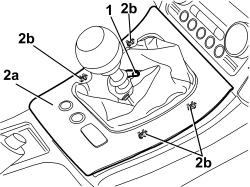
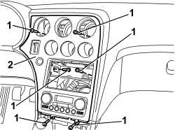
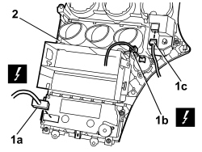

7040A17 AIR CONDITIONER CONTROLS
- Path
- Procedures > 70 FITTINGS > 7040 BODY INTERIOR FITTINGS AND TRIM > 7040A PASSENGER COMPARTMENT TRIMS > 7040A17 AIR CONDITIONER CONTROLS
- Kind
- repair procedure (removal / refitting; the operation number is the code)
- Applies to
- all engines; all production periods
- Interactive page
- https://sloeber94.github.io/elrnDB/#/939011241
Applies to: all engines; all production periods
 Removing
Removing
 Refitting
Refitting- Remove all the centre vents.
Op. 5010C34 AIR OUTLET ON CONSOLE - R+R
Remove the radio or, alternatively, the navigator.
Op. 5570T80 CAR RADIO EQUIPMENT - R+R
1. Release the retaining button for the gear lever boot.
2. Lift up the trim (2a) slightly releasing the internal retainers (2b).

Applies to: all engines; all production periods
1. Undo the trim fixing bolts.
2. Move the trim slightly.

Applies to: all engines; all production periods
1. Disconnect the electrical connection.
Description | Component |
|---|---|
CLIMATE CONTROL SYSTEM CONTROL UNIT |
2. Disconnect the electrical connection.
Description | Component |
|---|---|
STARTING BUTTON |
3. Disconnect the electrical connection.
Description | Component |
|---|---|
IGNITION DEVICE |
4. Keep the trim assembly.

Applies to: all engines; all production periods
If necessary:
Op. 5040D18 AIR CONDITIONING CONTROL UNIT - R.R.
Op. 5570T10 CAR RADIO SUPPORT - R+R - INCLUDES CONTACT REPAIR AND SUPPLY CIRCUIT CHECK
Op. 5520G30 START/STOP SWITCH FOR EASY-GO SYSTEM STARTER MOTOR - R.R.
Applies to: all engines; all production periods
Refitting
RemovingCheck that the trim is not damaged.
If removed:
Op. 5040D18 AIR CONDITIONING CONTROL UNIT - R.R.
Op. 5570T10 CAR RADIO SUPPORT - R+R - INCLUDES CONTACT REPAIR AND SUPPLY CIRCUIT CHECK
Op. 5520G30 START/STOP SWITCH FOR EASY-GO SYSTEM STARTER MOTOR - R.R.
Op. 5505A31 ELECTRONIC KEY ACKNOWLEDGEMENT DEVICE - R. R.
- Connect the electrical connections.
- Position the trim assembly and tighten the bolts.
- Position the gear lever surrounding trim and attach the retainers.
- Fit the boot retaining button.
Topics linked from this page (9)
- 5010C34 AIR OUTLET ON CONSOLE - R+R
- 5040D18 AIR CONDITIONING CONTROL UNIT - R.R.
- 5505A31 ELECTRONIC KEY ACKNOWLEDGEMENT DEVICE - R. R.
- 5520G30 START/STOP SWITCH FOR EASY-GO SYSTEM STARTER MOTOR - R.R.
- 5570T10 CAR RADIO SUPPORT - R+R - INCLUDES CONTACT REPAIR AND SUPPLY CIRCUIT CHECK
- 5570T80 CAR RADIO EQUIPMENT - R+R
- H002 STARTING PUSH BUTTON
- H003 IGNITION DEVICE
- M070 CLIMATE CONTROL SYSTEM CONTROL UNIT
Topics that link to this page (20)
- 5010B24 UNDER-FACIA AIR DUCTS - R.R.
- 5010D40 PASSENGER COMPARTMENT AIR SENSOR FAN - R+R
- 5040C10 AIR CONDITIONING CASING - R.R
- 5040C50 AIR CONDITIONING HEATER RADIATOR - R.R.
- 5040C64 A/C EVAPORATOR - R+R
- 5040D18 AIR CONDITIONING CONTROL UNIT - R.R.
- 5040D80 AIR CONDITIONER SYSTEM WIRING BUNDLE - R R OR REPLACE
- 5040D86 AIR CONDITIONING RIGHT AIR MIXTURE FLAP CONTROL MOTOR - R.R
- 5040D94 AIR CONDITIONING LEFT UPPER AIR DISTRIBUTION FLAP MOTOR (DEFROST) - R.R
- 5040D96 AIR CONDITIONING RIGHT UPPER DISTRIBUTION FLAP MOTOR (DEFROST) - R.R
- 5505A31 ELECTRONIC KEY ACKNOWLEDGEMENT DEVICE - R. R.
- 5505C31 BUILT-IN WIRING UNDER DASHBOARD - R.R.
- 5505C41 PASSENGER COMPARTMENT WIRING - R.R
- 5520G30 START/STOP SWITCH FOR EASY-GO SYSTEM STARTER MOTOR - R.R.
- 5560C51 COMBINED ANALOGUE CONTROL PANEL - R+R OR REPLACE
- 5570T10 CAR RADIO SUPPORT - R+R - INCLUDES CONTACT REPAIR AND SUPPLY CIRCUIT CHECK
- 5580C22 AIR BAG MODULE - PASSENGER SIDE - R.R
- 5580C24 PASSENGER SIDE AIR BAG MODULE SUPPORT R. R.
- 7040A10 DASHBOARD TRIM - R+R
- 7210A74 R R FACIA SUPPORT BEAM